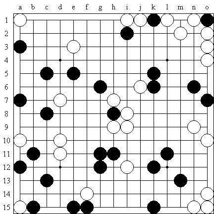

【VCF】无边旷野
#1 【VCF】无边旷野作者：茗弈宽容 发表时间：2010-1-28 12:10:55

（黑先胜，原题刊载于日本连珠社机关志《连珠世界》2006年6月号封面，作者系六段棋手）
（转自中华连珠）
#2 Re:【VCF】无边旷野作者：飞哥 发表时间：2010-1-28 12:57:36
在正常情况下，这道题能目算出VCF的人，乃圣人也。。。我只能五体投地！
#3 Re:【VCF】无边旷野作者：茗弈宽容 发表时间：2010-1-28 15:01:53
 呵呵，水月应该会杀吧，大家杀出来了就发图奖励威望的。
呵呵，水月应该会杀吧，大家杀出来了就发图奖励威望的。#4 Re:【VCF】无边旷野作者：黄药师 发表时间：2010-1-28 17:22:54
电脑计算这是68步vcf！
#5 Re:【VCF】无边旷野作者：许相公 发表时间：2010-1-29 7:33:21
 哪位同志在实战中能走出这种型来
哪位同志在实战中能走出这种型来#6 Re:【VCF】无边旷野作者：左伟光 发表时间：2010-2-2 6:33:24
个人认为：做题并不能提高棋力